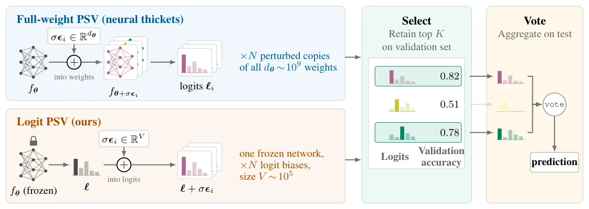
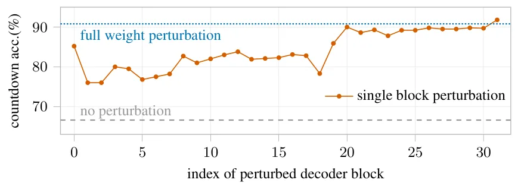
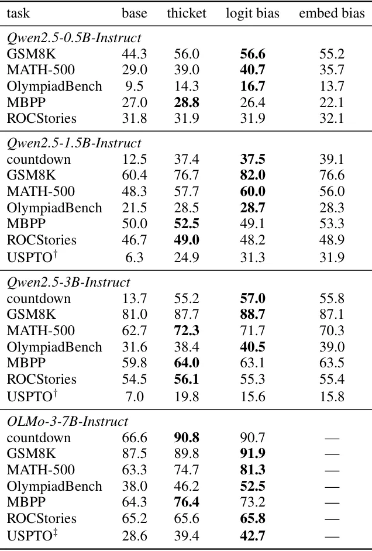

O Mito dos Especialistas Locais no Espaço de Pesos
Há algum tempo, a comunidade de Machine Learning ficou fascinada com a hipótese dos 'Neural Thickets' (Espessuras Neurais). A ideia, proposta por Gan & Isola, sugere que os pesos de modelos de linguagem pré-treinados de grande escala residem em vizinhanças densas de 'especialistas' para tarefas específicas. Segundo essa visão, basta aplicar pequenas perturbações gaussianas aleatórias aos pesos do modelo para 'descobrir' esses especialistas ocultos, resultando em ganhos massivos de precisão em tarefas de raciocínio, sem a necessidade de fine-tuning (ajuste fino) tradicional.
Os resultados iniciais eram impressionantes. Em benchmarks como o Countdown com o modelo Llama-3.1-8B-Instruct, a precisão saltou de 10,8% para 63,6% apenas perturbando os pesos. Isso parecia indicar uma estrutura geométrica profunda e útil no espaço de parâmetros dos modelos. No entanto, essa explicação geométrica carrega uma carga computacional implícita: para explorar essa 'espessura', teoricamente, é necessário modificar uma fração significativa do vetor de pesos, que pode ter bilhões de dimensões.
Este paper questiona se essa complexidade é realmente necessária. Os autores partem de uma pergunta simples, mas poderosa: será que a melhoria na performance exige perturbar toda a rede neural? Ou será que os ganhos observados são um artefato de outros mecanismos, como a diversidade de saída e a seleção baseada em validação? A resposta deles desafia a intuição estabelecida e propõe uma alternativa mais leve e, em muitos casos, mais eficaz.

A Hipótese da Perturbação de Logits
Os autores introduzem o conceito de Perturb-Select-Vote (PSV), um template geral que abrange tanto a perturbação de pesos quanto a perturbação de saídas. O processo tem três etapas: gerar preditores perturbados, selecionar os membros de alto desempenho em um pequeno conjunto de validação e agregar suas previsões através de votação no teste.
A inovação central deste trabalho é o 'Logit PSV'. Em vez de perturbar os parâmetros internos do modelo (que exigem cópias da rede e muito custo de inferência para gerar as variações), os autores mantêm o modelo totalmente congelado. Eles adicionam apenas um viés aleatório gaussiano aos logits (as pontuações brutas antes da softmax) na saída do modelo. Esse viés é fixo durante a geração autogressiva de cada amostra.
Essa abordagem é radicalmente diferente. Ela não executa nenhuma computação adicional dentro da rede neural. Não há forward pass modificado para gerar diferentes 'visões' do mundo; há apenas uma redefinição da probabilidade relativa dos tokens finais. Se a hipótese dos Neural Thickets estivesse correta, esperaríamos que essa simplificação extrema destruísse a performance. Os resultados mostram exatamente o oposto: o Logit PSV iguala ou supera a perturbação completa de pesos na maioria das tarefas de raciocínio.
Desconstruindo o Mecanismo: Menos é Mais
Para entender por que a perturbação de pesos inteira não era necessária, os autores realizaram uma série de ablações. Eles descobriram que perturbar apenas um único bloco decoder (decoder block) do modelo já recuperava a maior parte do ganho de performance. Isso enfraquece a ideia de que a 'espessura' é uma propriedade global distribuída uniformemente por todos os bilhões de parâmetros.
Ao empurrar essa observação ao extremo, eles removeram a perturbação de pesos por completo. O modelo permanece estático. A única variabilidade vem do viés adicionado aos logits. Nos experimentos com o modelo OLMo-3-7B-Instruct, o Logit PSV elevou a precisão no MATH-500 de 63,3% (base) para 81,3%. Em comparação, a perturbação completa de pesos (Full-weight PSV) atingiu 74,7%. Ou seja, a versão mais simples e barata superou a versão complexa.
Isso sugere que os ganhos atribuídos aos 'especialistas locais' no espaço de pesos podem, na verdade, ser explicados pela diversidade de saída induzida pela perturbação, combinada com uma seleção rigorosa baseada em validação e uma agregação por votação. A perturbação dos pesos, neste contexto, age primariamente através dos deslocamentos de logits que ela induz, e não por uma mudança estrutural profunda na capacidade de raciocínio do modelo.

Conectando a Métodos Conhecidos: PSV como Generalização
Ao reinterpretar os Neural Thickets através da lente do PSV, os autores conectam esse fenômeno a métodos de inferência já estabelecidos. Adicionar um viés gaussiano aos logits e fazer decoding guloso (greedy decoding) define um método de amostragem perturbado-MAP. Selecionar membros com base no desempenho de validação é análogo à seleção guiada por verificadores (verifier-guided selection), onde se escolhe a melhor resposta entre N tentativas.
A etapa final de votação relaciona o PSV à consistência auto-consistente (self-consistency), onde múltiplas amostras são agregadas para chegar à resposta mais provável. Uma análise de primeira ordem nos dados do paper apoia essa visão: pequenas perturbações nos pesos atuam, em primeira ordem, principalmente através dos deslocamentos que causam nos logits. Isso significa que a complexidade do espaço de pesos pode ser mapeada diretamente para a simplicidade do espaço de saída.
Em modelos fortes, os autores mostram que o ajuste de temperatura na amostragem combinado com votação por maioria já iguala a performance do Full-weight PSV. Isso indica que a diversidade de saída e o ensembling explicam a maior parte dos ganhos. Em modelos mais fracos, a seleção baseada em validação torna-se crucial para filtrar membros não confiáveis antes da agregação.
Extensão para Visão Computacional
Os autores não se limitaram a linguagem natural. Eles estenderam a análise para modelos de visão pré-treinados em cenários de mudança de domínio (domain shift), onde o modelo é testado em dados distribuídos diferentemente do treinamento. Nesse contexto, o equivalente a um 'especialista de tarefa' é um 'especialista de domínio'.
Os experimentos em observação da Terra mostraram que o Logit PSV melhorou substancialmente o desempenho sob mudança de domínio. Curiosamente, a perturbação completa dos pesos (Full-weight PSV) forneceu pouco benefício adicional além do que já era obtido com a perturbação de logits. Isso reforça a tese de que a estrutura local no espaço de pesos não é o motor principal dos ganhos observados; a diversidade e seleção no espaço de saída são suficientes.

Limitações e Implicações Práticas
Apesar dos resultados robustos, o paper admite limitações importantes. Os experimentos de linguagem param em modelos de 7 bilhões de parâmetros. Modelos maiores podem exibir efeitos no espaço de pesos que as perturbações de logits não capturam completamente. Além disso, o método PSV requer um conjunto de seleção rotulado e uma maneira de comparar respostas geradas para a votação, o que limita sua aplicabilidade direta à geração aberta (open-ended generation) sem verificação.
Outra limitação técnica é que a análise de primeira ordem só é válida para perturbações suficientemente pequenas (sigma baixo). Finalmente, assim como o Full-weight PSV, o Logit PSV requer K avaliações do modelo para cada entrada de teste, o que aumenta o custo de inferência em relação a uma única previsão. No entanto, o custo computacional de adicionar um viés aleatório aos logits é insignificante comparado à inferência da rede neural em si.
Do ponto de vista ético, o Logit PSV herda os vieses e modos de falha do modelo subjacente. Como é um método de adaptação livre de treinamento (training-free), ele poderia, em teoria, ser usado para direcionar um modelo para comportamentos indesejáveis, embora os autores tenham avaliado apenas benchmarks padrão de raciocínio e reconhecimento de imagens.
Conclusão: Uma Simplificação Poderosa
Este paper não descarta a possibilidade de existência de estrutura local útil no espaço de pesos. No entanto, ele demonstra convincentemente que essa estrutura não é necessária para explicar os ganhos de performance observados nos Neural Thickets. Ao isolar os papéis de amostragem, seleção e votação, os autores mostram que a diversidade de saída e o ensembling são os verdadeiros impulsionadores do sucesso.
O Logit PSV surge como uma alternativa simples e eficaz. Ele mantém o modelo congelado, requer apenas a adição de viés nas saídas e, em muitos casos, supera a perturbação completa de pesos. Isso conecta os Neural Thickets a métodos de inferência mais tradicionais e oferece aos desenvolvedores uma ferramenta leve para melhorar a precisão de modelos pré-treinados sem o overhead de manipular bilhões de parâmetros.
O que fica
- Perturbar apenas os logits de um modelo congelado (Logit PSV) iguala ou supera a perturbação completa dos pesos (Full-weight PSV) em tarefas de raciocínio.
- Os ganhos dos Neural Thickets são explicados por diversidade de saída, seleção baseada em validação e votação, não necessariamente por especialistas no espaço de pesos.
- Perturbar um único bloco decoder recupera a maior parte do ganho, sugerindo que a informação não está distribuída uniformemente por todos os pesos.
- No domínio de visão computacional, a perturbação de logits também supera a perturbação de pesos completa em cenários de mudança de domínio.
Paper original: Rethinking Neural Thickets Without Weight Perturbations
Comentários
Nenhum comentário ainda. Seja o primeiro.